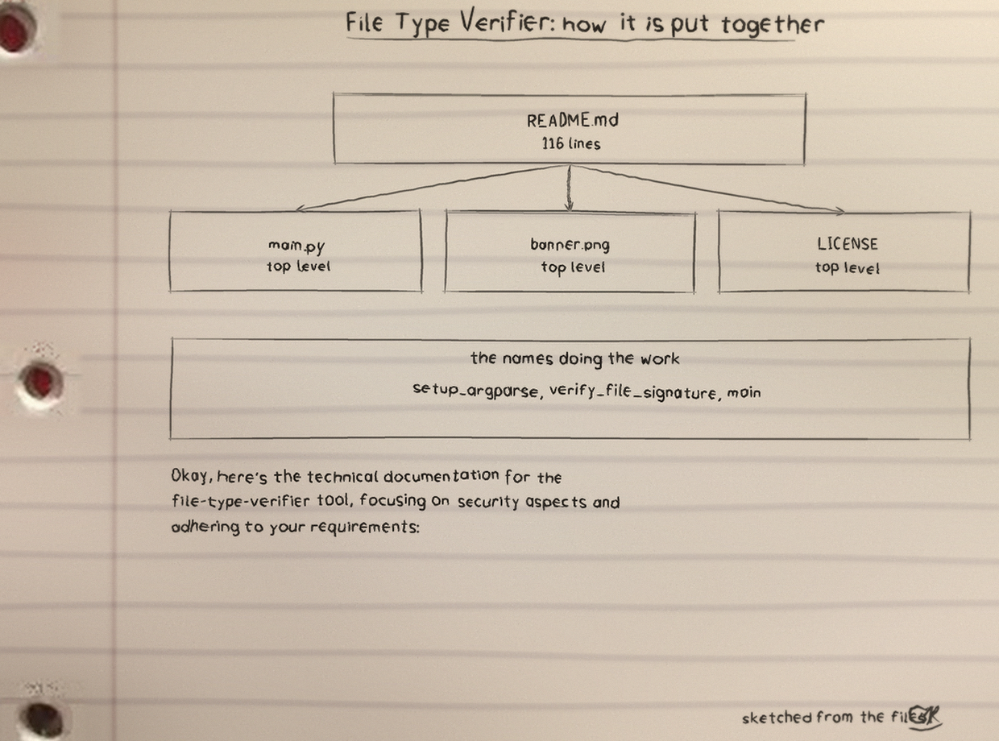
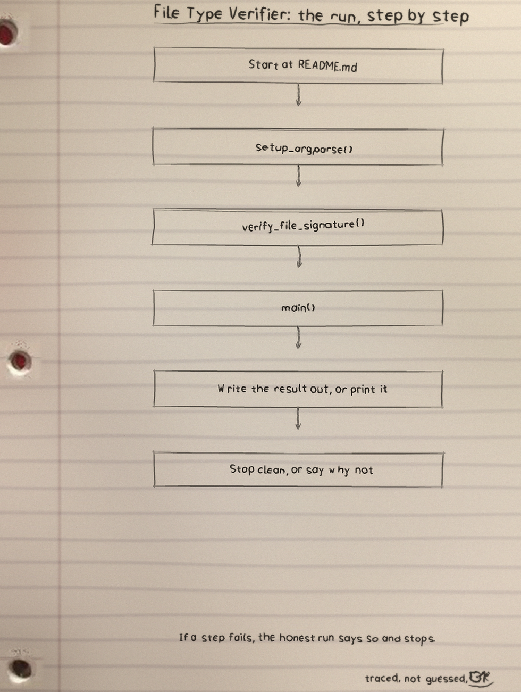
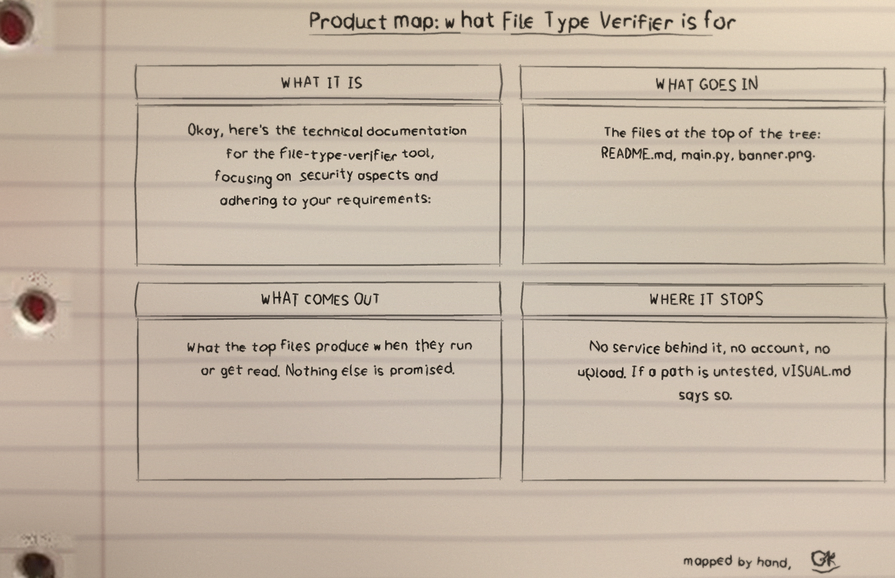

Okay, here's the technical documentation for the file-type-verifier tool, focusing on security aspects and adhering to your requirements:
What it is
File Type Verifier: 6 files, 228 counted lines across Markdown 116, Python 112, Text 0. One job, done in the open, in files you can read.
The biggest piece
README.md carries the most
lines. If the project grows, that file is where the growth
lands first, for better or worse.
The honest gap
No test files yet. That is the honest gap, and the roadmap in the visuals folder says what the first one should cover.
Run it
The repo README has the exact commands for this one. The shape is the shape for most of my projects: clone it, read the top file first so you know what will happen, then run it on something you do not mind breaking.
$ git clone https://github.com/ShadowGuard-AI/file-type-verifier.git
$ cd file-type-verifier
The code, as it sits in the repo
From README.md, line 1 on. I did
not tidy it for the page. What you see is what the file has.
Okay, here's the technical documentation for the `file-type-verifier` tool, focusing on security aspects and adhering to your requirements:
**Technical Documentation: file-type-verifier**
**1. Introduction**
The `file-type-verifier` is a command-line utility designed to enhance security by verifying the declared file type against its actual content using magic bytes or file signatures. This tool helps detect file type mismatches and masquerading attempts, which are common tactics used in malicious activities. This tool is categorized under "File" operations and analysis.
**2. Security Monitoring Capabilities**
* **File Type Mismatch Detection:** `file-type-verifier` actively monitors for discrepancies between a file's extension (or declared type) and its actual content. This allows identification of files that have been renamed or manipulated to evade security controls.
* **Masquerading Attack Detection:** The tool specifically targets masquerading attacks, where malicious actors disguise executable or harmful content as innocuous file types (e.g., a .txt file that's actually a .exe).
* **Anomaly Detection:** By providing a reliable method to verify file type, deviations from expected content are highlighted as potential security anomalies that warrant further investigation.
**3. Data Protection Features**
* **Integrity Verification:** `file-type-verifier` helps ensure the integrity of file content by verifying its true format. A mismatch can indicate a compromised file or data corruption due to an attack or system error.
* **Data Loss Prevention (DLP) Aid:** The tool can serve as a component of a larger DLP system, providing a method to identify and filter unauthorized file types. It can prevent sensitive data, stored in specific file formats, from being mishandled or leaked.
* **Mitigation of Supply Chain Attacks:** By verifying file types, especially downloaded or shared artifacts, you can ensure the file you're using is what it claims to be, preventing the execution of malicious or injected code.
**4. System Integrity Checks**The files that matter
| File | Lines |
|---|---|
README.md | 116 |
main.py | 112 |
banner.png | 0 |
LICENSE | 0 |
logo.png | 0 |
requirements.txt | 0 |
Names doing the work: setup_argparse, verify_file_signature, main.
Drawn by hand
I sketch my projects on notebook paper so I have to understand them well enough to draw them. The full set, with the counts and how they were counted, is the file-type-verifier-Visuals folder in the repo. Nothing is drawn over the binder holes. That is a rule, not a style.


